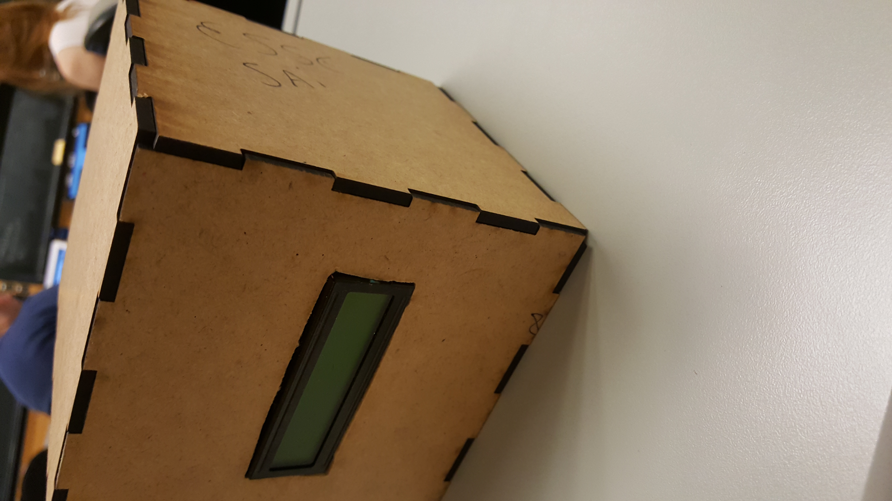

- 

O processo desse projeto
Como projeto final da materia Instrumentação e Medição tivemos que confeccionar uma estação metereologica que funcionasse a base do Arduino, este que é um microcomputador.Essencialmente, a mesma deveria ter sensores analogicos que detectassem umidade, pressão e temperatura, de tal forma que as informações captadas a cada segundo pelos mesmos fossem mostradas em um lcd que tambem seria conectado ao arduino, entretanto, os alunos do Insper,até a confecção do trabalho utilizavam como forma de mediação do arduino-sensor uma protobord, mas para este projeto deveriamos aprender a como transformar esse circuito em algo mais simples, montando um PCB e soldando os sensores no mesmo.